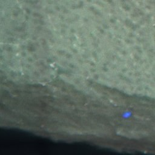
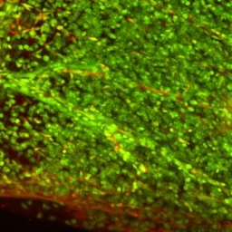
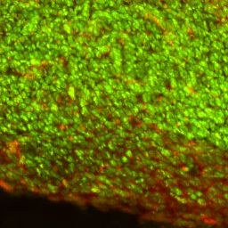

Ours, a stock-VQ-GAN baseline, and three conditioning variants (specimen label, A: stained references, B: unstained context), trained and tested on the same spatially blocked 5-fold split.



Images throughout: tile A_row7_col1_10x10 (specimen A, brain), held out in fold 0; VS = draw 0. Reconstructions in panel A are real outputs of the fine-tuned and the stock VQ-GAN.
Needs at test time: the UA tile only.
Shared by all five runs: 50 epochs · batch 8 × 4 accumulation · Adam, lr 10−4 · T = 1000 · EMA 0.995 · same spatial folds.
Needs at test time: the UA tile only.
Needs at test time: the specimen's identity, and that specimen must have been seen in training: an oracle-identity ablation that does not transfer to a new specimen.
Needs at test time: stained (C&SF) tissue of the same specimen, so this is a few-shot, extra-input setting.
Needs at test time: UA tiles of the same specimen, which always exist, so B is the form of specimen context that could be deployed on a new specimen.
| Model | VQ-GAN | conditioning c | extra params | needs at test time |
|---|---|---|---|---|
| Vanilla L-BBDM | ImageNet (stock) | 0 | 0 | UA tile |
| Ours | fine-tuned on C&SF | 0 | 0 | UA tile |
| + specimen label (oracle) | fine-tuned on C&SF | W[s] | 6.1k | + specimen seen in training |
| + A stained refs (extra input) | fine-tuned on C&SF | MLP of C&SF tile statistics | 0.53M | + C&SF tiles of the specimen |
| + B unstained ctx | fine-tuned on C&SF | MLP of UA tile statistics | 0.53M | + UA tiles of the specimen |
Same split, schedule and sampler for all five; only the encoder (vanilla) or c (the three variants) changes. Ours and vanilla are plain image-to-image translation. The label is an oracle that does not exist for a new specimen. A needs stained tissue from the same specimen, so it must be presented as a few-shot or extra-input setting. B needs only uncleared tissue, which is always available.
Look at the outputs: tile viewer · whole-sample viewer